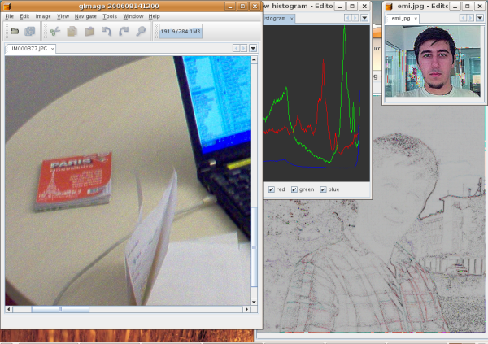
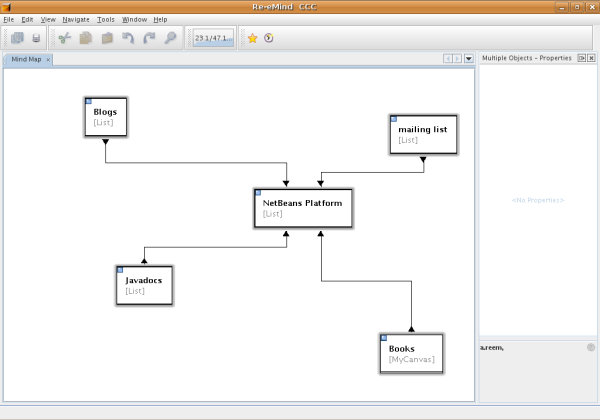

|
Emilian Bold |
| Emilian's Hot Links: |
Emilian Bold from Romania has been using NetBeans IDE and the NetBeans Platform for many years. Recently he ported a Swing application to the NetBeans Platform. Here, he shares his general experiences with NetBeans, as well as some pleasant discoveries made while porting his application. He also talks about NetBeans Javadoc and how useful he has found it while using the NetBeans APIs.
Hi! I live in Timisoara, Romania. (Click here for directions!) I work fulltime as a Java programmer for Alcatel Timisoara and I freelance once in a while.
Sadly, there is no vibrant Java community in Timisoara. There are lots of people programming in Java, to my knowledge, both Java ME and Java EE, but we don't have anything formal, like a Java User Group (JUG).
I've talked to some people that have been planning to start a JUG (more on the Java EE side) but I don't think it is wise to make an estimate of when that will happen right now. It will probably happen in the next year, with some investment from a startup.
It's actually quite a funny story. Initially I had a really lousy PC and, because I had learned Java from some certification books I found at our university's library, I used Notepad with javac and after that JCreator for a while.
I later managed to get a "smuggled" copy of NetBeans on a CD from some older guys working in a small startup. It was amazing. I had no idea what "Bean Patterns" did but it was very nice... and very slow on my PC. This is how I found out about the modular structure of NetBeans, the fact that you can disable modules to free some RAM, and thus I learned about the NetBeans Platform.
Initially the NetBeans Platform represented, to me, the core of NetBeans that allowed me to "disable" the other memory hungry modules...
However, since it was open-sourced, I started reading about it and got to the Javadoc files. Those files are the lesser known hidden gems in the docs! As a trainee, I started printing the Javadoc HTML files one by one for each API... Nodes... Actions... etc... For example, these ones are good:
I like the idea of having everything pluggable, with dependecies among modules and integrated into a single tool.
My first project was a report generator on top of the Platform, the 3.6 release. After that, I skipped the 4.x release and then returned with NetBeans 5.0. There is a huge difference between the two. 5.0, and above, is much more friendly towards module developers. It took me days years ago to do and learn something that is automatically generated now with a simple wizard.
One thing I did was... port a Swing application to the NetBeans Platform! It is an image processing application. Here is a screenshot of the ported application on the NetBeans Platform:

Well, during my re-introduction to 5.0, I needed a simple project to play with. So I took a project I did with my fellow student Mihaela Gander during my university studies. Together, we had built an image processing application. Now, to reacquaint myself with the NetBeans Platform, I tried to port it over to the NetBeans Platform.
It's not actually finished yet, since I want to give it to my students to be enhanced further when school starts at the university in October. I'll teach a class or two there, about Java, and hopefully pitch the NetBeans Platform.
By the way, the fact that the NetBeans Platform is modular makes it excellent for this kind of job—each student or pair may do their own module and at the end you get a full application with lots of independent modules for different image operations.
Well, the porting was quite easy—I had a JDesktop with some JInternalFrames and I already had a home-made way of defining actions with their own place in the menu etc, which is a "poor man's platform", so to speak. So all I had to do was convert JInternalFrame to TopComponent and then use the NetBeans IDE wizards for the Actions.
I took the easy way with a CallableSystemAction since there are only two kinds of TopComponents—image or histogram—but I would like to replace them with proper CookieActions.
Other than that, since it was pure Swing, nothing had to be altered. I'm now using the META-INF/services to allow outside modules to implement new operations and then rely on the Lookup.
Hopefully it will become a good teaching tool—with the new scripting engines in JDK 6, students could make small scripts to test the newly learned filters, etc. The scripting part is not implemented yet, hopefully it will be done by October.
And the new full screen mode really comes in handy for images!
The current project I'm slowly working on is a mind mapping application, using the great NetBeans Visual Library. Here's what the application looks like right now:

Mind mapping is just a simple way to present ideas by using links between notions or words, using different colors, icons, node sizes and shapes (go here for details).
Basically, I'm planning to heavily use the NetBeans Visual Library, but currently David Kaspar, the NetBeans engineer responsible for this library, is still working on it, especially the Javadoc side. So, I'm just going to wait a little. My code uses pieces from the examples, so there isn't much worthy or actually not that much that is mine or original. I use pieces from the examples while waiting for some docs or tutorial to learn more about how I can customize the display of the nodes or links, to make them look better.
I enjoy the fact that everything is already made—menu items that enable/disable, toolbar buttons, modules that can be updated from the web. For me, once a desktop application gets an (auto)update feature, it's in a whole other segment.
There is so much useful code there that it would have taken ages to write it yourself. Of course, that also means learning the APIs...
By the way, I'm also a fan of dismantling NetBeans! Lots of good code there, with no need to be tied to a particular platform or framework. For example, I've extracted the Progress API to a standalone version and open sourced it at progress-api.dev.java.net. I'm also glad someone extracted the Window system. Something else: org-openide-util.jar is also great with the Lookup in standalone applications.
On the IDE side, I struggled a lot initially with my weak PC and the fact that NetBeans was quite heavy for the RAM. This looks like peanuts now, with 2GB RAM on my laptop, but for lesser PCs, it's tough. Thinking back now, I think it was wise not to dumb-down the IDE just the make it faster. The feature list is impressive and the design excellent, so some CPU cycles don't matter, in retrospect.
On the NetBeans Platform side, 3.6 was quite hard to program even if there was a freely-downloadable book written with 3.5 in mind. Of course, that 3.6 made most of the examples unusable.
Regarding NetBeans IDE, I just saved some money and bought a new PC...
For the NetBeans Platform, I've read many times the Javadoc (damn that unfortunate "cookie" word!) and then the book. In the end, it started making sense and I could read the Javadoc with some ease. But I still learn new things as I read the mailing list or a new tutorial.
Well, a little thing I've blogged about (here) is how to add your own status bar component in a NetBeans Platform application with the help of StatusLineElementProvider. Basically, you just create the META-INF/services folders in the src/ folder and add the org.openide.awt.StatusLineElementProvider file with the name of your implementing class.
Next, in your implementing class you just need to implement the StatusLineElementProvider interface and return your Component in getStatusLineElement(). It's easy as hell with a trick—how do you determine the order of the items in the statusbar? Well, you rely on the Lookup (described here), via the #position enhancement.
Basically, the file will contain first your class and then a numeric position:
com.example.program.YourClass #position=SomeNumber
And then the NetBeans Platform will add components to the status bar/line starting with the smallest number. Just keep in mind that the Progress API has a component with position -13 so usually you would use a smaller (that is, negative) number.
Well, this made me smile recently: How do you get rid of the build number from a NetBeans Platform application's titlebar? Normally that is a branding operation. So you would go to org-netbeans-core-windows.jar in the module suite's branding folder, edit the Bundle.properties file and play with CTL_MainWindow_Title and CTL_MainWindow_Title_No_Project.
However, I recently read about another solution—in your module installer's restored() method, just put something like this:
System.setProperty("netbeans.buildnumber", "")
This works! (Unless the user disables your module...) This shows that sometimes there is more than one way to do the branding. However, the person that discovered this trick must surely have grep-ed the source code to discover it. Go open source!
A nice thing about the Options Dialog API is that it allows invalid states via the isValid method. This is a great way to signal to the user that something isn't filled correctly. And the NetBeans Platform helps, by disabling the OK button and providing only the Cancel. As soon as the Option panel gets into a stable state, and isValid() returns true, the OK button is enabled again.
If you use the Options Panel wizard, you basically have to call controller.changed() once the valid-status has changed, which will notify the listeners. Otherwise you have to fire a property change for PROP_VALID.
I tried introducing the NetBeans Platform at work for the tools we are developing. Sadly, it has a rather large code base we're building on top of, so it is quite complicated to convince people it would be a smart move.
Also, Eclipse is the most widely used IDE here. People are rather fond of their IDE, even if they see some of the benefits of the NetBeans Platform.
Maybe this sounds like blasphemy but, once there is an Eclipse plugin for NetBeans Platform development, you've struck gold! Then, you'd have a clean migration path towards the NetBeans Platform and, from there, to NetBeans IDE. Or at least merge, somehow, the NetBeans module system with OSGI.
The form editor (the Matisse GUI Builder) is getting rather powerful! Initially, I liked writing things by hand, since it felt a lot more professional, but nowadays I feel no shame in using the IDE to make a Swing GUI!
The wizards are also getting a lot more powerful. I only use them on the module development side, but they are just great. They allow you to focus on what's application-specific, without necessarily learning an entire new NetBeans API for a simple feature.
Remove cookies altogether and use just Lookup! Now it looks to me like a hibrid state. I don't think it serves anyone. Backwards-compatibility sounds nice but there has to be a limit... or at least a bleeding-edge fork.
If you want to do Java EE development without shareware, edit an XML file without installing some plugin for the syntax highlighting, create a nice JFrame without writing any line of code—take a look at NetBeans IDE. The fact that you can take the ZIP release and unzip it on Linux and Windows and have them both work is also a plus.
As a developer, I have to say I like the NetBeans Platform for what it offers and because of the way I see things get done on http://www.netbeans.org. For example, the NetBeans Javadoc is extraordinary. The api.html pages are a killer and to have the DTD's, properties defined, UIManager keys and more in the Javadoc really gives you a global view of the module API. It just shows that lots of work has been put into this.
The specs or proposals also look way nicer and people seem to be doing some great work. For example, the floating windows specification is excellent. Other proposals are also impressive, due to the professionalism involved and to the fact that they are discussed first on the mailing list and refined.
This kind of quality work gives me a lot of confidence about the IDE and Platform and also an opportunity to learn from the best.
For information about creating and developing plug-in modules and rich-client applications, see the following resources: